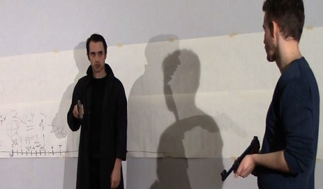

Prøverom: Waiting for war med Grete Christine Lunde
- Kategori:
- Prøverom
Prøverom
Prøverom - Dato:
- 13.01.2014 til 17.01.2014
- Start kl :
- 10:00
- Slutt kl :
- 16:00
- Adresse:
- Norsk Skuespillersenter, Welhavensgate 1, Oslo
 Filmskaper Grete Christine Lunde gjennomførte Prøverom med sitt langfilmprosjekt «Waiting for war», en respons på hendelsene 22. juli 2011.
{kind=link}
Her er et sitat fra Gretes rapport:
"WFW workshopens utforsking
Skuespillerarbeidet med konsulent:
Vi har gjennom Prøverommets skuespillere
sammen med konsulent og manusforfatter Lars Nygaard, utforsket hva ideen krig gjør med
oss mennesker.
Det er blitt jobbet i studio på Norsk Skuespillersenter på dagtid, der
skuespillere har utforsket forskjellige karakterer med improvisasjon og koreografiske
eksperimenter. Det er blitt filmet på location der karakterene har kunnet opptre i et
stimulerende univers: som «speiler» hver enkelt karakters psyke og handlingsmønster.
Tema:
Vi er alle påvirket av universets og naturens krefter. I dette prosjektet har vi spurt
oss selv om hva som gjør at krig er så sterkt tilstede inne i oss mennesker?
Er krig naturlig. Hva er det vi lurer hele tiden på når det kommer til spørsmålet om den
neste store krigen? Vil det bli en 3. verdenskrig? Og hvem er fienden egentlig? I naturens
krig er det vi mennesker som er «the bad guys», Oppter krig som et naturlig fenomen, eller
er det noe annet som igjen fører til at krig skjer? Hva er det vi alle er redd for? Hva er det
vi går rundt å venter på? Er det det eksistensielle i det å vente på døden, vente på den
neste store krigen, noe som gjør at vi opptrer aggressivt?
Det er ikke enkle spørsmål vi har stilt oss i løpet av denne arbeidsperioden.
Manuskonseptet har vokst for hver dag i løpet av Prøverommet.
Vi takker så mye Norsk Skuespillersenter for 5 givende dager. Vi gleder oss til å jobbe
videre med manuset. Fortsettelsen blir et WFW-«Acting studio», der skuespillerene
fortsatt vil delta i karakter- og manusutviking for dette prosjektet. Vi er inspirerte nå til
fortsettelsen på dette filmprosjektet!"
Konsulent og manusforfatter Lars Nygård skriver:
«Det var utrolig spennende å jobbe med skuespillere på en slik måte som Grete har gjort
det mulig for oss å jobbe på. De viser stor glede og sprer inspirasjon ut gjennom hele
rommet. Det å kunne observere hver enkelt skuespiller som jeg allerede har en formening
om hvordan karakteren skal være, for så å se hvordan de vil tolke karakteren sin når de
har fått så lite informasjon er virkelig fascinerende. Jeg var utrolig imponert over innsatsen til alle sammen og synes det var utrolig flott at vi kunne holde på så lenge i lokalet som vi kunne.
Det å kunne skrive ned hva jeg tenkte om hver enkelt når det kom til karakterene var
veldig givende. Å kunne se menneskene gjennom hver enkelt skuespiller gir meg en
sterkere realitet rundt hver enkelt karakter og dermed styrker manusprosessen med Grete
og teamet videre. Det var noen flotte dager som jeg gjerne vil oppleve igjen.»
Du finner Gretes nettside her.